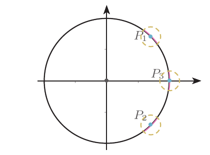
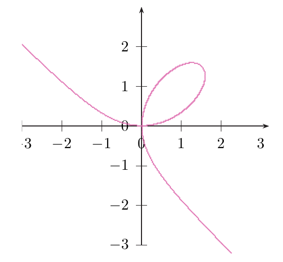
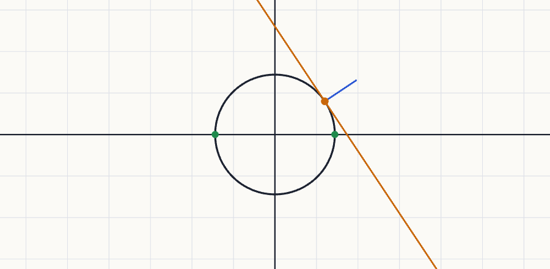

Teorema de la función implícita
Cuándo una ecuación $f(x,y)=0$ permite «despejar» una variable en función de las otras, aunque no sepamos despejarla, y cómo derivar esa variable sin conocer su fórmula (derivación implícita).
0Antes de empezar U p.204
Una ecuación como $x^2+y^2=1$ dibuja una curva. A veces, mirando un trozo de esa curva, ese trozo es la gráfica de una función $y=g(x)$ (por ejemplo, la mitad de arriba de la circunferencia). Pero hay puntos donde no: en el extremo derecho de la circunferencia, por cada $x$ habría dos valores de $y$. El teorema de la función implícita da un test que se hace solo con una derivada parcial: si $\frac{\partial f}{\partial y}\ne0$ en el punto, la curva allí es una gráfica $y=g(x)$ (la tangente no es vertical). Y, además, regala la derivada de $g$ sin necesidad de conocer $g$: $\frac{dy}{dx}=-\frac{\partial f/\partial x}{\partial f/\partial y}$.
PQué necesitas saber ya
- Derivadas parciales y gradiente (tema 4.3), y que el gradiente es perpendicular a las curvas de nivel.
- Regla de la cadena con una variable final (tema 5.2): $\frac{d}{dx}f(x,y(x))=\frac{\partial f}{\partial x}+\frac{\partial f}{\partial y}\,y'(x)$. Es literalmente la herramienta de este tema.
- Plano tangente (tema 5.1): $z\approx z_0+z_x(x-x_0)+z_y(y-y_0)$.
- Derivación de una variable: regla del producto y de la cadena (tema 2.2), necesarias para derivar dos veces.
Mapa del tema
| Apartado | Qué contiene | Dónde está |
|---|---|---|
| 1 Ecuación implícita y explícita | la circunferencia como ejemplo guía; Ej. 5.10 | U pp.204-205 |
| 2 El teorema en dos variables | enunciado, intuición, Ej. 5.11 | U pp.206-207 |
| 3 Derivación implícita | $y'=-f_x/f_y$, derivadas sucesivas; Ej. 5.12 (folium) | U pp.207-210 |
| 4 Curvas de nivel | pendiente de la tangente; Ej. 5.13 | U p.210 |
| 5 El teorema en varias variables | $z=g(x_1,\dots,x_n)$; Ej. 5.14 | U pp.211-212 |
| 6 Recetas | cómo comprobar el teorema y cómo derivar implícitamente | síntesis |
| 7 Ejercicios de E | 5.23-5.27 (5 ejercicios) | E pp.186-191 |
| 8 Ejemplos propios | 4 ejemplos | propio |
| 9 Examen | 2 problemas de X | X pp.30-31, 150-151 |
| 10 Chuleta y comprobación | fórmulas, errores, lista | síntesis |
Qué se pide en los ejercicios y en el examen
(A) «¿Garantiza el teorema que la ecuación define $y$ como función de $x$ cerca de un punto?»: comprobar $f(a,b)=0$ y la parcial adecuada $\ne0$ (E 5.23, 5.25; X p.150, verdadero/falso de 1 punto). (B) Derivar implícitamente, a veces dos veces ($g'(1)$ y $g''(1)$; E 5.24; X p.30, 3 puntos). (C) Pendiente de una curva de nivel (E 5.26). (D) Superficie $z=g(x,y)$ y sus derivadas parciales (E 5.27). U recomienda «realizar numerosos ejercicios para interiorizar con mayor facilidad el contenido de este apartado».
1Ecuación implícita y ecuación explícita U pp.204-205
Resolver una ecuación de dos variables es despejar una variable, es decir, escribirla como función de la otra. De $y-x^2=0$ se despeja $y=x^2$ sin problema. Pero de $y^5+y+x=0$ no sabemos despejar $y$ con operaciones elementales, aunque para cada $x$ hay un único $y$. El teorema dirá cuándo es posible aunque no sepamos hacerlo, y nos dejará derivar igualmente.
U pp.204-205Una expresión es una ecuación implícita cuando toma la forma $f(x_1,\dots,x_n)=0$: normalmente no muestra cómo despejar una variable en función de las otras, ni siquiera sabemos a priori si es posible. Una ecuación explícita es aquella en la que una de las variables está expresada en función de las otras: si llamamos $y=x_n$ a esa variable, la ecuación es $y=y(x_1,\dots,x_{n-1})$. Pasar de explícita a implícita es muy sencillo: basta escribir $f(x_1,\dots,x_{n-1},y)=y-y(x_1,\dots,x_{n-1})=0$. La pregunta es el camino inverso: ¿cuándo, y en qué conjunto, se puede pasar de implícita a explícita?
U p.205Se pasa todo a un lado: $f(x,y)=x^2-y=0$. Es útil porque el teorema siempre trabaja con «$f=0$».
U p.205Ejemplo guía: la circunferencia
La circunferencia de radio 1 es $x^2+y^2=1$, o sea, $f(x,y)=x^2+y^2-1=0$. Tres puntos de ella:
- $P_1=\left(\frac{\sqrt2}2,\frac{\sqrt2}2\right)$: cerca de $P_1$ se despeja $y=\sqrt{1-x^2}$.
- $P_2=\left(\frac{\sqrt2}2,-\frac{\sqrt2}2\right)$: cerca de $P_2$, $y=-\sqrt{1-x^2}$.
- $P_3=(1,0)$: cerca de $P_3$ no se puede escribir $y$ en función de $x$ (por cada valor de $x$ deberíamos tener dos valores de $y$), pero sí al revés: $x=\sqrt{1-y^2}$.

En $P_1$ y $P_2$ la curva «sube o baja» y un trozo suyo es una gráfica $y=g(x)$. En $P_3$ la tangente es vertical: el trozo de curva no es la gráfica de ninguna función de $x$. Hay que encontrar una condición con derivadas que detecte las tangentes verticales. La señal de alarma es $\frac{\partial f}{\partial y}=0$ (si además $\frac{\partial f}{\partial x}\ne0$, la tangente es vertical; siguiente apartado).
P2El teorema de la función implícita (dos variables) U pp.206-207
Sea $f:D\subset\mathbb R^2\to\mathbb R$ una función continua con derivadas parciales continuas en un abierto $D$. Sea $(a,b)$ un punto de $D$ con $$\text{(1)}\ \ f(a,b)=0\qquad\text{y}\qquad\text{(2)}\ \ \frac{\partial f}{\partial y}(a,b)\ne0.$$ Entonces existen un intervalo abierto $U$ al que pertenece $a$, un intervalo abierto $V$ al que pertenece $b$ y una única función $g:U\to V$ tal que $f(x,g(x))=0$ para $x\in U$. Además, $b=g(a)$, $g$ es continua y con derivada continua, y $$\frac{dg}{dx}=\frac{dy}{dx}=-\frac{\partial f/\partial x}{\partial f/\partial y}\qquad\text{para todo }x\in U,\ y\in V,$$ con las parciales evaluadas en $(x,g(x))$. Cambio de papeles: el resultado vale intercambiando las dos variables: si $\frac{\partial f}{\partial x}(a,b)\ne0$, se puede expresar $x$ en función de $y$ (y entonces $\frac{dx}{dy}=-\frac{\partial f/\partial y}{\partial f/\partial x}$).
U p.206- Condición (1): el punto está en la curva. Sin ella, ni se plantea la pregunta.
- Condición (2): la parcial respecto de la variable que quieres despejar no se anula. Si quieres $y$, miras $\frac{\partial f}{\partial y}$; si quieres $x$, miras $\frac{\partial f}{\partial x}$. Geométricamente, la tangente a la curva en $(a,b)$ no es vertical (si despejas $y$) o no es horizontal (si despejas $x$).
- Conclusión local: solo habla de un entorno de $a$: «cerca de». No dice cuán grande es $U$.
- Es condición suficiente: si (2) falla, el teorema no garantiza nada; no afirma que sea imposible (a veces lo es, a veces no).
- La fórmula de $y'$ es la regla de la cadena aplicada a $f(x,g(x))=0$ (apartado 3).
- $f(x,y)=x^2+y^2-1$ es un polinomio: continua con parciales continuas en $\mathbb R^2$. $\frac{\partial f}{\partial x}=2x$, $\frac{\partial f}{\partial y}=2y$.
- Despejar $y$ exige $2y\ne0$, es decir, $y\ne0$. Se puede en $P_1$ y en $P_2$ (ambos con $y=\pm\frac{\sqrt2}2\ne0$); no se puede garantizar en $P_3=(1,0)$ ($y=0$).
- Despejar $x$ exige $2x\ne0$. En $(1,0)$: $\frac{\partial f}{\partial x}(1,0)=2\ne0$, así que cerca de $(1,0)$ sí se despeja $x=\sqrt{1-y^2}$.
- Respuesta a lo que U deja como ejercicio («cuándo se puede despejar $x$»): en todos los puntos de la circunferencia salvo $(0,1)$ y $(0,-1)$.
(i) Olvidar la condición (1): dar por bueno un punto porque la parcial no se anula, sin comprobar que está en la curva. (ii) Mirar la parcial equivocada: para despejar $x$ se mira $\frac{\partial f}{\partial x}$, no $\frac{\partial f}{\partial y}$. (iii) Decir «es imposible» cuando la parcial vale $0$: lo correcto es «el teorema no lo garantiza». (iv) Olvidar escribir la ecuación como $f=0$ (pasar todo a un lado).
P3Derivación implícita U pp.207-210
Supón que cerca de $(a,b)$ la ecuación $f(x,y)=0$ define $y=y(x)$. Entonces $f(x,y(x))$ vale $0$ para todo $x$ del entorno: es una función constante, y su derivada es $0$. Pero esa derivada la sabes calcular con la regla de la cadena del tema 5.2. Igualas a $0$, despejas $y'$, y ya está: no ha hecho falta conocer $y(x)$.
U p.207Si $f(x,y)=0$ define $y=y(x)$ en un entorno de $(a,b)$, se escribe $f(x,y(x))$ y se aplica la regla de la cadena: $$\frac{d}{dx}f(x,y(x))=\frac{\partial f}{\partial x}+\frac{\partial f}{\partial y}\,\frac{dy}{dx}=0\ \Longrightarrow\ \frac{dy}{dx}=-\frac{\partial f/\partial x}{\partial f/\partial y}.$$ Este proceso se llama derivación implícita. Si se dan las condiciones adecuadas, se puede derivar implícitamente sucesivas veces.
U p.207Fórmula: $y'=-f_x/f_y$, evaluada en el punto: rápida para la primera derivada. Derivar la ecuación: escribes la ecuación con $y=y(x)$ dentro, derivas todo respecto de $x$ (cada $y$ lleva un factor $y'$) y despejas $y'$: la más cómoda para $y''$, porque entonces se deriva otra vez la ecuación ya derivada.
PLos ceros de $f(x,y)=x^3+y^3-3xy$ definen el folium de Descartes (hoja de Descartes), curva propuesta en 1638 por Descartes con la ecuación $x^3+y^3=3axy$ para un número real $a$ (aquí $a=1$).

- Parciales (continuas: $f$ es polinomio): $\frac{\partial f}{\partial x}=3x^2-3y$, $\frac{\partial f}{\partial y}=3y^2-3x$.
- Dónde se despeja $y$: donde $\frac{\partial f}{\partial y}\ne0$, es decir, $x\ne y^2$. Para ver qué puntos de la curva incumplen eso, se sustituye $x=y^2$ en $x^3+y^3-3xy=0$: $y^6+y^3-3y^3=y^3(y^3-2)=0$, luego $y=0$ o $y=\sqrt[3]2$. Así, $y$ se escribe en función de $x$ si $(x,y)\notin\{(0,0),(\sqrt[3]4,\sqrt[3]2)\}$, que son los puntos donde la tangente es vertical.
- Dónde se despeja $x$: donde $y\ne x^2$; por la simetría de la ecuación, salvo en $(0,0)$ y $(\sqrt[3]2,\sqrt[3]4)$.
- Resumen: en todo punto de la curva distinto de $(0,0)$ se puede despejar una de las dos variables, porque solo en $(0,0)$ se anulan las dos parciales.
- Primera derivada: se deriva la ecuación con $y=y(x)$: $3x^2+3y^2\frac{dy}{dx}-3y-3x\frac{dy}{dx}=0$. Despejando, $$\frac{dy}{dx}=-\frac{3x^2-3y}{3y^2-3x}=\frac{y-x^2}{y^2-x}.$$
- Segunda derivada: se deriva otra vez la ecuación $3x^2+3y^2y'-3y-3xy'=0$ respecto de $x$, lo que da $6x+6y(y')^2+3(y^2-x)\,y''-6y'=0$; se despeja $y''=\dfrac{6y'-6x-6y(y')^2}{3(y^2-x)}$, se sustituye $y'=\frac{y-x^2}{y^2-x}$ y, tras simplificar, $$\frac{d^2y}{dx^2}=-\frac{2\left(xy+xy^4+x^4y-3x^2y^2\right)}{(y^2-x)^3}.$$
- Simplificación opcional sobre la curva (útil para evaluar): como $x^3+y^3=3xy$, es $xy^4+x^4y=xy(x^3+y^3)=3x^2y^2$, así que el numerador es $2xy$ y $y''=-\dfrac{2xy}{(y^2-x)^3}$.
Al derivar la ecuación, olvidar que $y$ depende de $x$: $\frac{d}{dx}(y^3)=3y^2y'$ (no $3y^2$), y $\frac{d}{dx}(xy)=y+x\,y'$ (producto). Para $y''$, derivar la ecuación derivada antes de sustituir el punto (si se sustituye primero se deriva una constante y sale $0=0$).
P4Pendiente de una curva de nivel U p.210
La curva de nivel $f(x,y)=k$ es una ecuación implícita: «todos los puntos donde $f$ vale $k$». Si no es vertical en el punto, es la gráfica de $y=y(x)$, y la pendiente de su tangente es $y'$. Ya sabemos que $y'=-f_x/f_y$. Esto coincide con lo ya sabido: el gradiente $(f_x,f_y)$ es perpendicular a la curva de nivel, y un vector perpendicular a él es $\left(1,-\frac{f_x}{f_y}\right)$ (su producto escalar con el gradiente es $f_x-f_x=0$): es la dirección de la tangente, y su pendiente es $-\frac{f_x}{f_y}$.
U p.210Si $z=f(x,y)$ cumple las condiciones del teorema, sus curvas de nivel $f(x,y)=k$ definen una de las variables (digamos $y$) en función de la otra, y la pendiente de la recta tangente es $$\frac{dy}{dx}=-\frac{\partial f/\partial x}{\partial f/\partial y}\,:$$ menos el cociente de la primera entre la segunda componente del gradiente en ese punto.
U p.210- Qué curva: $f(1,0)=1$, así que $k=1$ y la curva es $F(x,y)=x^2+3xy-y^2-1=0$.
- Parciales: $\frac{\partial F}{\partial x}=2x+3y$ (vale $2$ en $(1,0)$), $\frac{\partial F}{\partial y}=3x-2y$ (vale $3\ne0$ en $(1,0)$). Hay $y=y(x)$ cerca de $x=1$, con $y(1)=0$.
- Pendiente: $y'(x)=-\dfrac{2x+3y}{3x-2y}$; en $(1,0)$, $y'(1)=-\dfrac23$.

5El teorema en varias variables U pp.211-212
Con tres variables, $f(x,y,z)=0$ es una superficie (como la esfera $x^2+y^2+z^2=1$). Cerca de un punto, esa superficie es la gráfica de una función $z=g(x,y)$ si el plano tangente no es «vertical», y eso lo mide $\frac{\partial f}{\partial z}\ne0$. Es lo mismo que antes, con una variable más a la derecha.
PSea $f(x_1,\dots,x_n,z)$ una función continua, definida en un abierto $D\subset\mathbb R^{n+1}$ y con valores en $\mathbb R$, con derivadas parciales continuas en $D$. Sea $(a_1,\dots,a_n,b)\in D$ con $f(a_1,\dots,a_n,b)=0$ y $\frac{\partial f}{\partial z}(a_1,\dots,a_n,b)\ne0$. Entonces existen una bola abierta $U$ de $(a_1,\dots,a_n)$, un intervalo abierto $V$ de $b$ y una única función $g:U\to V$ con derivadas parciales continuas tal que $f(x_1,\dots,x_n,g(x_1,\dots,x_n))=0$ para todo $(x_1,\dots,x_n)\in U$. Además, $z=g(x_1,\dots,x_n)$ y $$\frac{\partial g}{\partial x_j}=\frac{\partial z}{\partial x_j}=-\frac{\partial f/\partial x_j}{\partial f/\partial z}\qquad\text{para todo }(x_1,\dots,x_n)\in U\text{ y }z\in V.$$ Por comodidad se toma la última variable como la que se escribe en función de las otras, pero el resultado vale para cualquiera de ellas, sin más que cambiar $z$ por $x_j$. (U indica también que el resultado se generaliza a funciones $f:\mathbb R^{n+m}\to\mathbb R^m$, sin desarrollarlo.)
U p.211- Pasar a $f=0$: $f(x,y,z)=x^2-xy+3z^2-3$; $f(0,1,1)=0-0+3-3=0$ ✓.
- Parciales: $\frac{\partial f}{\partial x}=2x-y$, $\frac{\partial f}{\partial y}=-x$, $\frac{\partial f}{\partial z}=6z$. En el punto, $\frac{\partial f}{\partial z}(0,1,1)=6\ne0$ ✓: existe $g$ en un disco centrado en $(0,1)$ con $z=g(x,y)$.
- Aquí se puede despejar (para comprobar): $z=\sqrt{1-\frac{x^2-xy}3}$ (raíz positiva, porque $z=1>0$).
- Derivadas parciales sin despejar: $\frac{\partial z}{\partial x}(0,1)=-\frac{\partial f/\partial x}{\partial f/\partial z}(0,1,1)=-\frac{-1}{6}=\frac16$ y $\frac{\partial z}{\partial y}(0,1)=-\frac{\partial f/\partial y}{\partial f/\partial z}(0,1,1)=-\frac06=0$.
- Comprobación derivando $z=\sqrt{1-(x^2-xy)/3}$ en $(0,1)$: da $\frac16$ y $0$. ✓
6Recetas del tema P
- Pasarlo todo a un lado: $f(x,y)=0$ (p. ej., $x^2+y^2=9\to f=x^2+y^2-9$).
- Regularidad: $f$ continua con parciales continuas cerca del punto (con polinomios, exponenciales, senos y cosenos basta una frase).
- Condición 1: $f(a,b)=0$.
- Condición 2: la parcial respecto de la variable que se despeja no se anula en el punto: $\frac{\partial f}{\partial y}(a,b)\ne0$ para $y=g(x)$; $\frac{\partial f}{\partial x}(a,b)\ne0$ para $x=g(y)$; $\frac{\partial f}{\partial z}\ne0$ para $z=g(x,y)$.
- Si falla la 1, el punto no está en la curva. Si falla la 2, el teorema no garantiza nada (y no se concluye que sea imposible).
- Primera derivada: $y'=-\frac{f_x}{f_y}$ (o $z_x=-\frac{f_x}{f_z}$, $z_y=-\frac{f_y}{f_z}$) evaluada en el punto; o bien derivar la ecuación con $y=y(x)$ dentro y despejar $y'$.
- Segunda derivada: derivar otra vez la ecuación ya derivada (cada término es un producto de factores que dependen de $x$), después sustituir el punto y el $y'$ ya hallado, y despejar $y''$.
- Pendiente de una curva de nivel de $f$ por $(a,b)$: $m=-\frac{f_x(a,b)}{f_y(a,b)}$ (la constante $k$ no afecta a las derivadas).
7Ejercicios del libro, resueltos E pp.186-191
Orden recomendado para aprender: 5.23 → 5.25 (comprobar las condiciones del teorema) → 5.26 (pendiente con $-f_x/f_y$) → 5.27 (tres variables) → 5.24 (derivada segunda implícita).
Ejercicio 5.23 · ¿en qué punto garantiza el teorema $y=g(x)$? E p.186
El teorema de la función implícita garantiza que la ecuación $x^2-xy^2+y^2=1$ define a $y$ como función implícita de $x$ cerca de: a) $(0,1)$. b) $(2,1)$. c) $(-1,0)$. d) Ninguna de las anteriores.
- Qué me piden
- Decidir en cuál de los puntos a), b), c) la ecuación $x^2-xy^2+y^2=1$ define $y$ como función de $x$ según el teorema.
- Cómo lo pienso
- Para poder despejar $y$ cerca de un punto hacen falta dos cosas: que el punto esté de verdad en la curva y que la curva no tenga tangente vertical allí (es decir, $\frac{\partial f}{\partial y}\ne0$). Se comprueban las dos en cada candidato.
- Qué uso
- Teorema de la función implícita (U p. 206): $f$ con parciales continuas, $f(a,b)=0$ y $\frac{\partial f}{\partial y}(a,b)\ne0$.
- Por dónde empiezo
- Pasar la ecuación a la forma $f(x,y)=0$ y calcular $\frac{\partial f}{\partial y}$.
- Escribir $f=0$: $f(x,y)=x^2-xy^2+y^2-1$. Es un polinomio: continua con parciales continuas en $\mathbb R^2$.
- Parcial respecto de $y$ (la variable que se despeja): $\frac{\partial f}{\partial y}=-2xy+2y=2y(1-x)$.
- Punto $(0,1)$: $f(0,1)=0-0+1-1=0$ ✓; $\frac{\partial f}{\partial y}(0,1)=2\cdot1\cdot1=2\ne0$ ✓. Se cumplen las dos.
- Punto $(2,1)$: $f(2,1)=4-2+1-1=2\ne0$ ✗: el punto no está en la curva, el teorema ni se puede plantear (aunque $\frac{\partial f}{\partial y}(2,1)=-2\ne0$).
- Punto $(-1,0)$: $f(-1,0)=1-0+0-1=0$ ✓, pero $\frac{\partial f}{\partial y}(-1,0)=2\cdot0\cdot2=0$ ✗.
Respuesta: a).
Olvidar la condición $f(a,b)=0$ y dar por bueno $(2,1)$ porque su parcial no se anula.
Ejercicio 5.25 · $y=g(x)$ y $x=g(y)$ cerca de $(1,1)$ E pp.188-189
Sea la ecuación $3xy-x^3+\cos(\pi y)=1$. Justifica si el teorema de la función implícita garantiza que esta ecuación define a $y$ como función implícita de $x$ cerca de $(1,1)$. ¿Lo garantiza para $x$ como función implícita de $y$?
- Qué me piden
- Decidir si, cerca de $(1,1)$, la ecuación define $y=g(x)$ y si define $x=g(y)$.
- Cómo lo pienso
- Es el mismo punto con dos preguntas distintas: para despejar $y$ importa $\frac{\partial f}{\partial y}$ y para despejar $x$ importa $\frac{\partial f}{\partial x}$. Que la parcial valga $0$ no prueba que sea imposible, solo que el teorema no lo garantiza.
- Qué uso
- Teorema de la función implícita (U p. 206) y su versión con los papeles de $x$ e $y$ cambiados (U p. 206).
- Por dónde empiezo
- Escribir $f=0$ y comprobar que $f(1,1)=0$.
- Escribir $f=0$ (pasar el $1$ a la izquierda): $f(x,y)=3xy-x^3+\cos(\pi y)-1$. Suma de un polinomio y un coseno: continua con parciales continuas en $\mathbb R^2$.
- El punto está en la curva: $f(1,1)=3-1+\cos\pi-1=3-1-1-1=0$ ✓.
- ¿$y$ en función de $x$? $\frac{\partial f}{\partial y}=3x-\pi\operatorname{sen}(\pi y)$; en $(1,1)$: $3-\pi\operatorname{sen}\pi=3\ne0$ ✓. Sí lo garantiza el teorema: $y=g(x)$ cerca de $x=1$ con $g(1)=1$ (y de paso $g'(1)=-\frac{f_x}{f_y}=-\frac03=0$).
- ¿$x$ en función de $y$? $\frac{\partial f}{\partial x}=3y-3x^2$; en $(1,1)$: $3-3=0$ ✗. El teorema no lo garantiza.
- Qué significa «no lo garantiza»: el teorema es una condición suficiente; con $\frac{\partial f}{\partial x}=0$ no concluye nada. (Complemento, no necesario en el examen: cerca de $(1,1)$ la curva se parece a $y-1\approx(x-1)^2$; para $y$ algo mayor que $1$ hay dos valores de $x$ y para $y\lt 1$ ninguno, así que aquí de hecho no se puede escribir $x=g(y)$.)
Mirar la parcial equivocada: para despejar $x$ hay que mirar la parcial respecto de $x$.
Ejercicio 5.26 · pendiente de la curva de nivel de $ye^x-x^2$ por $(0,1)$ E pp.189-190
Sea $f$ la función dada por $f(x,y)=ye^x-x^2$. ¿Cuál es la pendiente de la recta tangente a la curva de nivel que pasa por $(0,1)$ en ese mismo punto?
- Qué me piden
- La pendiente en $(0,1)$ de la recta tangente a la curva de nivel de $f(x,y)=ye^x-x^2$ que pasa por ese punto.
- Cómo lo pienso
- Una curva de nivel es una curva implícita $f=c$. Si cerca del punto es una gráfica $y=y(x)$, su pendiente es $y'$, que se obtiene sin despejar. También se puede pensar que la tangente es perpendicular al gradiente.
- Qué uso
- Teorema de la función implícita y $y'=-\frac{f_x}{f_y}$ (U p. 206-207); ejemplo de curva de nivel (U p. 210, Ejemplo 5.13).
- Por dónde empiezo
- Calcular el nivel $f(0,1)$ y escribir la curva como $F(x,y)=ye^x-x^2-1=0$.
Paso previo. $f(0,1)=1\cdot e^0-0=1$: la curva es $ye^x-x^2=1$.
Método 1: teorema de la función implícita.
- $F(x,y)=ye^x-x^2-1$: continua con parciales continuas. $F(0,1)=0$ ✓.
- $\frac{\partial F}{\partial y}=e^x$; en $(0,1)$ vale $1\ne0$ ✓: cerca de $(0,1)$ la curva es una gráfica $y=y(x)$ con $y(0)=1$.
- La pendiente de la tangente a una gráfica es la derivada: $y'(0)=-\frac{F_x(0,1)}{F_y(0,1)}$.
- $\frac{\partial F}{\partial x}=ye^x-2x$; en $(0,1)$ vale $1$.
- Pendiente: $y'(0)=-\frac11=-1$. Recta tangente: $y=1-x$.
Método 2: gradiente perpendicular.
- $\nabla f=(ye^x-2x,\ e^x)$; $\nabla f(0,1)=(1,1)$.
- La tangente es perpendicular a $(1,1)$: un vector director es $(1,-1)$ (producto escalar $0$).
- Pendiente $=\frac{-1}{1}=-1$.
Respuesta: $-1$.
Olvidar el signo menos, o calcular $\frac{f_y}{f_x}$ (al revés).
Ejercicio 5.27 · $z=g(x,y)$ en $\mathbb R^3$: hallar $a$ y las parciales E pp.190-191
Se considera la función $f:\mathbb R^3\to\mathbb R$ definida por $f(x,y,z)=1-e^{(x^7+y^2-xz-1)}$. 1) Encuentra el valor de $a$ tal que cerca del punto $(1,0,a)$ la ecuación $f(x,y,z)=0$ defina implícitamente una función $z=g(x,y)$. 2) Calcula $\frac{\partial g}{\partial x}(1,0)$ y $\frac{\partial g}{\partial y}(1,0)$.
- Qué me piden
- Hallar el valor de $a$ para que $f(x,y,z)=0$ defina $z=g(x,y)$ cerca de $(1,0,a)$ y calcular $g_x(1,0)$ y $g_y(1,0)$.
- Cómo lo pienso
- El punto debe estar en la superficie (eso fija $a$) y la superficie no debe ser «vertical» respecto de $z$ ($\frac{\partial f}{\partial z}\ne0$). Entonces las pendientes de $z=g(x,y)$ se obtienen de las parciales de $f$ sin despejar $z$.
- Qué uso
- Teorema de la función implícita en tres variables: $g_x=-\frac{f_x}{f_z}$, $g_y=-\frac{f_y}{f_z}$ (U p. 211, Ejemplo 5.14).
- Por dónde empiezo
- Imponer $f(1,0,a)=0$ para hallar $a$.
- Regularidad: $f$ es una exponencial de un polinomio: continua con parciales continuas en $\mathbb R^3$, para cualquier $a$.
- Condición $f(1,0,a)=0$: el exponente vale $1+0-a-1=-a$, así que $1-e^{-a}=0\iff e^{-a}=1\iff a=0$. Único candidato: $(1,0,0)$.
- Condición $\frac{\partial f}{\partial z}\ne0$: por la regla de la cadena, $\frac{\partial f}{\partial z}=-e^{(\dots)}\cdot(-x)=x\,e^{(x^7+y^2-xz-1)}$. En $(1,0,0)$: $1\cdot e^0=1\ne0$ ✓. Respuesta 1: $a=0$.
- Otras parciales: $\frac{\partial f}{\partial x}=-(7x^6-z)e^{(\dots)}$, $\frac{\partial f}{\partial y}=-2y\,e^{(\dots)}$. En $(1,0,0)$: $f_x=-7$, $f_y=0$.
- Fórmula del teorema: $$\frac{\partial g}{\partial x}(1,0)=-\frac{f_x}{f_z}=-\frac{-7}{1}=7,\qquad\frac{\partial g}{\partial y}(1,0)=-\frac{f_y}{f_z}=-\frac01=0.$$
- Otra forma (derivar la ecuación): $f=0\iff e^{s}=1\iff s=0$ (la exponencial solo vale $1$ en $0$), es decir, $x^7+y^2-xz-1=0$. Con $z=g(x,y)$ y derivando respecto de $x$: $7x^6-g-x\,g_x=0$; en $(1,0)$ con $g=0$: $g_x=7$. Respecto de $y$: $2y-x\,g_y=0$, luego $g_y(1,0)=0$.
- Comprobación despejando (aquí se puede, para $x\ne0$): $z=\frac{x^7+y^2-1}{x}$, con $z_x=\frac{6x^7-y^2+1}{x^2}=7$ en $(1,0)$ y $z_y=\frac{2y}x=0$. ✓
Respuestas: $a=0$, $\frac{\partial g}{\partial x}(1,0)=7$, $\frac{\partial g}{\partial y}(1,0)=0$.
Al derivar respecto de $x$ con $z=g(x,y)$ dentro, olvidar que $xz$ es un producto: su derivada es $z+x\,z_x$, no $x\,z_x$.
Ejercicio 5.24 · $x=g(y)$ cerca de $(1,1)$; $g'(1)$ y $g''(1)$ E pp.187-188
Dada la ecuación $x^4+x^2y^3-y^2=1$. 1) Muestra que define a $x$ como función implícita de $y$ cerca de $(1,1)$. 2) Calcula $g'(1)$ y $g''(1)$, en donde $x=g(y)$ cerca de $(1,1)$.
- Qué me piden
- Probar que la ecuación define $x=g(y)$ cerca de $(1,1)$ y calcular $g'(1)$ y $g''(1)$.
- Cómo lo pienso
- Aquí se despeja $x$, así que la variable independiente es $y$ y la parcial que importa es $\frac{\partial f}{\partial x}$. Una vez garantizada $g$, no hace falta conocerla: se deriva la identidad $f(g(y),y)=0$ una vez para $g'$ y otra para $g''$.
- Qué uso
- Teorema de la función implícita con papeles cambiados (U p. 206) y derivación implícita sucesiva (U p. 207).
- Por dónde empiezo
- Escribir $f=0$, comprobar $f(1,1)=0$ y $\frac{\partial f}{\partial x}(1,1)\ne0$.
Apartado 1.
- $f(x,y)=x^4+x^2y^3-y^2-1$ (polinomio: continua con parciales continuas en $\mathbb R^2$).
- $f(1,1)=1+1-1-1=0$ ✓.
- $\nabla f=(4x^3+2xy^3,\ 3x^2y^2-2y)$; $\nabla f(1,1)=(6,1)$.
- $\frac{\partial f}{\partial x}(1,1)=6\ne0$ ✓. Por el teorema con los papeles cambiados hay intervalos $U\ni1$ (de $y$), $V\ni1$ (de $x$) y una única $g:U\to V$ con $f(g(y),y)=0$ y $g(1)=1$.
Apartado 2: $g'(1)$.
- Fórmula directa: $g'(1)=\frac{dx}{dy}(1)=-\frac{f_y(1,1)}{f_x(1,1)}=-\frac16$.
- Derivando la ecuación $g(y)^4+g(y)^2y^3-y^2-1=0$ respecto de $y$ (cadena en $g^4$, producto en $g^2y^3$): $$4g^3g'+2g\,g'\,y^3+3g^2y^2-2y=0.\qquad(\ast)$$
- En $y=1$, $g=1$: $4g'+2g'+3-2=0$, o sea $6g'(1)+1=0$ y $g'(1)=-\frac16$ (coincide).
Apartado 2: $g''(1)$.
- Derivar $(\ast)$ otra vez respecto de $y$, término a término (producto de factores que dependen de $y$):
- $\left(4g^3g'\right)'=12g^2(g')^2+4g^3g''$.
- $\left(2g\,g'\,y^3\right)'=2(g')^2y^3+2g\,g''\,y^3+6g\,g'\,y^2$.
- $\left(3g^2y^2\right)'=6g\,g'\,y^2+6g^2y$.
- $(-2y)'=-2$.
- Sustituir $y=1$, $g=1$, $g'=-\frac16$ (así la única incógnita es $g''$): $12\cdot\frac1{36}=\frac13$; $2\cdot\frac1{36}=\frac1{18}$; $12\cdot\left(-\frac16\right)=-2$; $6-2=4$. Queda $\frac13+\frac1{18}-2+4+6g''(1)=0$, es decir, $6g''(1)+\frac{43}{18}=0$.
- Despejar: $g''(1)=-\dfrac{43}{108}$.
Respuestas: $g'(1)=-\frac16$, $g''(1)=-\frac{43}{108}$.
Evaluar $(\ast)$ en el punto y después derivar (se deriva una constante y sale $0=0$); o tratar $g'$ como constante al derivar por segunda vez, olvidando los términos con $g''$.
8Ejemplos propios, de menos a más difícil P
Propio 1 · tangente a una elipse y tangentes horizontales P
Para la elipse $x^2+xy+y^2=7$: (a) comprueba que define $y=y(x)$ cerca de $(1,2)$ y halla la recta tangente allí; (b) ¿en qué puntos es horizontal la tangente?
- Qué me piden
- La recta tangente a la elipse $x^2+xy+y^2=7$ en $(1,2)$ y los puntos de tangente horizontal.
- Cómo lo pienso
- La tangente es horizontal cuando $y'=0$, y como $y'=-\frac{F_x}{F_y}$, eso ocurre donde $F_x=0$. Donde $F_y=0$ la tangente es vertical y no se puede despejar $y$.
- Qué uso
- Teorema de la función implícita y $y'=-\frac{F_x}{F_y}$ (U pp. 206-207).
- Por dónde empiezo
- Escribir $F=x^2+xy+y^2-7$ y comprobar $F(1,2)=0$.
- $F(x,y)=x^2+xy+y^2-7$; $F(1,2)=1+2+4-7=0$ ✓.
- $F_x=2x+y$, $F_y=x+2y$. En $(1,2)$: $F_x=4$, $F_y=5\ne0$ ✓.
- Pendiente: $y'(1)=-\frac45$. Recta tangente: $y=2-\frac45(x-1)$.
- (b) Tangente horizontal significa $y'=0$, es decir, $F_x=0$ (con $F_y\ne0$): $y=-2x$. Sustituyendo en la elipse: $x^2-2x^2+4x^2=3x^2=7$, $x=\pm\sqrt{7/3}$. Puntos: $\pm\left(\frac{\sqrt{21}}3,-\frac{2\sqrt{21}}3\right)$ (allí $F_y=x+2y=\mp\sqrt{21}\ne0$, así que la fórmula vale).
- Lectura: donde $F_y=0$ (es decir, $x=-2y$) la tangente es vertical y no se puede despejar $y$: son los puntos $\pm\left(\frac{2\sqrt{21}}3,-\frac{\sqrt{21}}3\right)$.
Propio 2 · $z=z(x,y)$ implícita y plano tangente P
La ecuación $z^3+xz-y=0$ define $z=z(x,y)$ cerca de $(0,1,1)$. (a) Compruébalo. (b) Calcula $z_x(0,1)$ y $z_y(0,1)$. (c) Usa el plano tangente para aproximar $z(0{,}1;\,0{,}9)$.
- Qué me piden
- Comprobar que $z^3+xz-y=0$ define $z=z(x,y)$ cerca de $(0,1,1)$, hallar $z_x$, $z_y$ y aproximar $z(0{,}1;0{,}9)$.
- Cómo lo pienso
- Despejar $z$ exigiría resolver una cúbica, pero las parciales de $z$ salen de las de $f$. Con ellas se construye el plano tangente, que sirve de aproximación cerca del punto.
- Qué uso
- Teorema en tres variables (U p. 211) y plano tangente (U p. 189).
- Por dónde empiezo
- Comprobar $f(0,1,1)=0$ y $f_z(0,1,1)\ne0$.
- (a) $f(x,y,z)=z^3+xz-y$ (polinomio). $f(0,1,1)=1+0-1=0$ ✓; $f_z=3z^2+x$, $f_z(0,1,1)=3\ne0$ ✓. Hay $z=z(x,y)$ con $z(0,1)=1$.
- (b) $f_x=z$, $f_y=-1$; en el punto, $f_x=1$, $f_y=-1$. Entonces $z_x(0,1)=-\frac13$ y $z_y(0,1)=-\frac{-1}3=\frac13$.
- (c) Plano tangente: $z\approx1-\frac13x+\frac13(y-1)$. En $(0{,}1;\,0{,}9)$: $z\approx1-\frac{0{,}1}3-\frac{0{,}1}3=0{,}9333$.
- Comparación: resolviendo numéricamente $z^3+0{,}1z-0{,}9=0$ cerca de $1$ sale $z\approx0{,}93098$: error $\approx0{,}0024$.
Propio 3 · $y'(0)$ e $y''(0)$ de $e^y+xy=e$ P
La ecuación $e^y+xy=e$ define $y=y(x)$ cerca de $(0,1)$. Calcula $y'(0)$ e $y''(0)$.
- Qué me piden
- Calcular $y'(0)$ e $y''(0)$ para la función $y(x)$ definida por $e^y+xy=e$ cerca de $(0,1)$.
- Cómo lo pienso
- No se despeja $y$: se deriva la ecuación suponiendo que $y$ depende de $x$, se evalúa para obtener $y'$ y se vuelve a derivar la ecuación derivada para obtener $y''$.
- Qué uso
- Teorema de la función implícita (U p. 206) y derivación implícita (U p. 207).
- Por dónde empiezo
- Comprobar $F(0,1)=0$ y $F_y(0,1)\ne0$, y derivar la ecuación una vez.
- Hipótesis: $F=e^y+xy-e$; $F(0,1)=e+0-e=0$ ✓; $F_y=e^y+x$, $F_y(0,1)=e\ne0$ ✓.
- Derivar la ecuación con $y=y(x)$ (cadena en $e^y$, producto en $xy$): $e^yy'+y+xy'=0.\quad(\ast)$
- En $x=0$, $y=1$: $e\,y'+1=0$, luego $y'(0)=-\frac1e$.
- Derivar $(\ast)$ otra vez: $e^y(y')^2+e^yy''+y'+y'+xy''=0$, es decir, $e^y(y')^2+e^yy''+2y'+xy''=0$.
- En $x=0$, $y=1$, $y'=-\frac1e$: $e\cdot\frac1{e^2}+e\,y''-\frac2e=0\Rightarrow e\,y''=\frac1e\Rightarrow y''(0)=\frac1{e^2}$.
- Lectura: $y'(0)\lt0$ e $y''(0)\gt0$: cerca de $x=0$ la curva baja y es convexa.
Propio 4 · folium: puntos sin despeje posible y $y''$ en $\left(\frac32,\frac32\right)$ P
Sea $F(x,y)=x^3+y^3-3xy$. (a) ¿En qué puntos de la curva $F=0$ no se puede despejar ninguna de las dos variables con el teorema? (b) En $\left(\frac32,\frac32\right)$ halla $y'$, $y''$ y la recta tangente.
- Qué me piden
- Puntos del folium $x^3+y^3-3xy=0$ donde el teorema no permite despejar ninguna variable, y $y'$, $y''$ y tangente en $\left(\frac32,\frac32\right)$.
- Cómo lo pienso
- No se puede despejar ninguna de las dos variables solo donde ambas parciales se anulan a la vez (y el punto está en la curva). En un punto bueno, $y'$ sale de la fórmula y $y''$ de derivar otra vez.
- Qué uso
- Teorema de la función implícita y folium de Descartes (U Ejemplo 5.12, pp. 207-210).
- Por dónde empiezo
- Plantear el sistema $F=0$, $F_x=0$, $F_y=0$.
- (a) Hay que resolver $F=0$, $F_x=3x^2-3y=0$ y $F_y=3y^2-3x=0$. De $F_x=0$: $y=x^2$; en $F_y=0$: $x^4=x$, luego $x=0$ o $x=1$. $(0,0)$: $F=0$ ✓. $(1,1)$: $F=1+1-3=-1\ne0$, no está en la curva. Solo $(0,0)$.
- (b) Comprobar el punto: $F\left(\frac32,\frac32\right)=\frac{27}8+\frac{27}8-\frac{27}4=0$ ✓. $F_y=3\cdot\frac94-\frac92=\frac94\ne0$ ✓.
- $y'$: $y'=\frac{y-x^2}{y^2-x}=\frac{\frac32-\frac94}{\frac94-\frac32}=\frac{-3/4}{3/4}=-1$. Tangente: $y=\frac32-\left(x-\frac32\right)$, es decir, $x+y=3$.
- $y''$ (forma simplificada sobre la curva): $y''=-\dfrac{2xy}{(y^2-x)^3}=-\dfrac{2\cdot\frac94}{\left(\frac34\right)^3}=-\dfrac{9/2}{27/64}=-\dfrac{32}3$.
- Lectura: $\left(\frac32,\frac32\right)$ es la «punta» del lazo, sobre la recta $y=x$; $y''\lt0$ (cóncava, en el sentido de U §3.5): la curva se curva hacia abajo respecto de su tangente $x+y=3$.
9Así lo preguntan en el examen X
En los exámenes recopilados en X, este tema aparece de dos maneras: (1) una pregunta corta de verdadero o falso sobre las hipótesis del teorema (1 punto) y (2) un ejercicio largo de «demuestre que define $x$ como función de $y$ y calcule $g'$ y $g''$» (3 puntos), igual que E 5.24. Las pendientes de curvas de nivel y las superficies $z=g(x,y)$ (E 5.26, 5.27) no aparecen en X, pero son el mismo teorema.
X1 · ¿garantiza el teorema $y=g(x)$ para $x^2+y^2=9$ cerca de $(3,0)$? X pp.150-151 (feb. 2019)
Razone si la siguiente afirmación es verdadera o falsa: el teorema de la función implícita para funciones de dos variables garantiza que la ecuación $x^2+y^2=9$ define a $y$ como función implícita de $x$ cerca de $(3,0)$.
- Qué me piden
- Decidir si es verdadero o falso que la ecuación $x^2+y^2=9$ define $y$ como función de $x$ cerca de $(3,0)$ según el teorema.
- Cómo lo pienso
- $(3,0)$ es el punto más a la derecha de la circunferencia: allí la tangente es vertical y no se puede escribir $y$ como función de $x$. En el examen basta ver que se rompe la hipótesis $\frac{\partial f}{\partial y}\ne0$.
- Qué uso
- Teorema de la función implícita (U p. 206): hace falta $f(a,b)=0$ y $\frac{\partial f}{\partial y}(a,b)\ne0$.
- Por dónde empiezo
- Escribir $f=x^2+y^2-9$ y calcular $\frac{\partial f}{\partial y}(3,0)$.
- Sea $f(x,y)=x^2+y^2-9$, polinomio: continua con parciales continuas en $\mathbb R^2$.
- $f(3,0)=9+0-9=0$: el punto está en la curva.
- $\frac{\partial f}{\partial y}(x,y)=2y$ y $\frac{\partial f}{\partial y}(3,0)=0$: no se cumple la hipótesis $\frac{\partial f}{\partial y}(a,b)\ne0$ del teorema.
- Falso: el teorema no garantiza que $y$ sea función implícita de $x$ cerca de $(3,0)$.
Para entenderlo (no hace falta escribirlo): de hecho es imposible: para $x$ un poco menor que $3$ hay dos valores $y=\pm\sqrt{9-x^2}$, y para $x\gt3$ ninguno. En cambio, $\frac{\partial f}{\partial x}(3,0)=6\ne0$: cerca de $(3,0)$ sí se despeja $x=\sqrt{9-y^2}$.
Contestar «verdadero» porque el punto está en la curva (solo se comprobó la condición 1).
X2 · $x^4+x^2y^3-y^2=1$: $x=g(y)$ cerca de $(1,1)$, $g'(1)$ y $g''(1)$ X pp.30-31 (sept. 2012)
Dada la ecuación $x^4+x^2y^3-y^2=1$, (a) demuestre que define a $x$ como función implícita de $y$ en un entorno de $(1,1)$; (b) si $x=g(y)$, calcule $g'(1)$ y $g''(1)$.
- Qué me piden
- Demostrar que la ecuación define $x=g(y)$ cerca de $(1,1)$ y calcular $g'(1)$ y $g''(1)$.
- Cómo lo pienso
- Es el Ejercicio 5.24: se despeja $x$, así que la condición es $\frac{\partial f}{\partial x}(1,1)\ne0$; después se deriva dos veces la identidad $f(g(y),y)=0$, evaluando solo al final de cada derivación.
- Qué uso
- Teorema de la función implícita con papeles cambiados (U p. 206) y derivación implícita (U p. 207).
- Por dónde empiezo
- Escribir $f=0$ y comprobar $f(1,1)=0$ y $f_x(1,1)=6\ne0$.
(a)
- $f(x,y)=x^4+x^2y^3-y^2-1$: polinomio, continua con parciales continuas en $\mathbb R^2$.
- $f(1,1)=0$.
- $\nabla f(x,y)=(4x^3+2xy^3,\ 3x^2y^2-2y)$, $\nabla f(1,1)=(6,1)$; en particular, $\frac{\partial f}{\partial x}(1,1)=6\ne0$.
- Por el teorema de la función implícita (con los papeles de $x$ e $y$ cambiados) existen un intervalo abierto $U\ni1$, un intervalo abierto $V\ni1$ y una única $g:U\to V$ con derivada continua tal que $f(g(y),y)=0$ para $y\in U$ y $g(1)=1$. Además, $g'(y)=\frac{dx}{dy}=-\frac{\partial f/\partial y}{\partial f/\partial x}(g(y),y)$.
(b)
- $g'(1)=-\frac{f_y(1,1)}{f_x(1,1)}=-\frac16$.
- Derivando $g^4+g^2y^3-y^2-1=0$ respecto de $y$: $4g^3g'+2gg'y^3+3g^2y^2-2y=0$.
- Derivando otra vez: $12g^2(g')^2+4g^3g''+2(g')^2y^3+2gg''y^3+12gg'y^2+6g^2y-2=0$.
- En $y=1$, $g=1$, $g'=-\frac16$: $\frac13+4g''+\frac1{18}+2g''-2+6-2=0\Rightarrow6g''(1)=-\frac{43}{18}\Rightarrow g''(1)=-\frac{43}{108}$.
Explicaciones (no hace falta escribirlas): en el paso 3, cada término de la línea anterior es un producto de factores que dependen de $y$ ($g$, $g'$, $y^3$…) y se usa la regla del producto con todos ellos (detalle término a término en E 5.24). Comprobación rápida de la cuenta: los números sueltos suman $\frac13+\frac1{18}-2+6-2=\frac{43}{18}$.
Usar la fórmula $g'=-f_x/f_y$ (la de $y=g(x)$) cuando lo que se despeja es $x$: daría $-6$ en lugar de $-\frac16$.
10Errores frecuentes, chuleta y lista de comprobación
Errores frecuentes
- No comprobar $f(a,b)=0$ (el punto debe estar en la curva).
- Mirar la parcial equivocada: la que cuenta es la de la variable que se despeja.
- Responder «imposible» cuando la parcial vale $0$: el teorema solo dice que no lo garantiza.
- Olvidar el signo menos en $y'=-f_x/f_y$, o invertir el cociente.
- Al derivar implícitamente, no multiplicar por $y'$ al derivar una potencia o función de $y$, o tratar $xy$ como si $y$ fuera constante.
- Para $y''$: sustituir el punto antes de derivar la segunda vez, o tratar $y'$ como constante.
- Confundir la fórmula de $y=g(x)$ con la de $x=g(y)$ (dan valores recíprocos: $-6$ en lugar de $-\frac16$).
- En $z=g(x,y)$, olvidar el término $z+x\,z_x$ de la derivada de un producto $xz$.
Chuleta
| Concepto | Enunciado | Fuente |
|---|---|---|
| Ecuación implícita / explícita | implícita: $f(x_1,\dots,x_n)=0$; explícita: $y=y(x_1,\dots,x_{n-1})$; de explícita a implícita: $f=y-y(\dots)=0$ | U p.205 |
| Teorema (dos variables) | $f$ y parciales continuas, $f(a,b)=0$, $\frac{\partial f}{\partial y}(a,b)\ne0$ $\Rightarrow$ existe única $y=g(x)$ cerca de $a$, $g(a)=b$ | U p.206 |
| Derivada implícita | $\dfrac{dy}{dx}=-\dfrac{\partial f/\partial x}{\partial f/\partial y}$ | U pp.206-207 |
| Cambio de papeles | si $\frac{\partial f}{\partial x}(a,b)\ne0$: $x=g(y)$, $\dfrac{dx}{dy}=-\dfrac{\partial f/\partial y}{\partial f/\partial x}$ | U p.206 |
| Origen de la fórmula | regla de la cadena en $f(x,y(x))=0$: $f_x+f_y\,y'=0$ | U p.207 |
| Folium de Descartes | $y'=\dfrac{y-x^2}{y^2-x}$; $y''=-\dfrac{2(xy+xy^4+x^4y-3x^2y^2)}{(y^2-x)^3}$ | U pp.209-210 |
| Pendiente de curva de nivel | $m=-\dfrac{f_x}{f_y}$ en el punto (tangente $\perp\nabla f$) | U p.210 |
| Teorema ($n+1$ variables) | $f(a_1,\dots,a_n,b)=0$, $\frac{\partial f}{\partial z}(a_1,\dots,a_n,b)\ne0$ $\Rightarrow$ $z=g(x_1,\dots,x_n)$ y $\dfrac{\partial z}{\partial x_j}=-\dfrac{\partial f/\partial x_j}{\partial f/\partial z}$ | U p.211 |
| Segunda derivada | derivar la ecuación ya derivada; sustituir punto y $y'$; despejar $y''$ | E 5.24 |
Lista de comprobación
- Sé pasar una ecuación a la forma $f=0$ y distinguir ecuación implícita de explícita.
- Sé enunciar el teorema de la función implícita en dos variables, con sus hipótesis y su conclusión local.
- Sé comprobar las dos condiciones ($f(a,b)=0$ y la parcial adecuada $\ne0$) y decir «el teorema no lo garantiza» cuando la segunda falla (E 5.23, 5.25; X p.150).
- Sé decidir qué parcial mirar según la variable que se despeja ($x$, $y$ o $z$).
- Sé calcular $y'$ con la fórmula $-f_x/f_y$ y derivando la ecuación.
- Sé calcular $g''$ derivando dos veces la ecuación (E 5.24, X p.30).
- Sé hallar la pendiente de la tangente a una curva de nivel (E 5.26).
- Sé aplicar el teorema en $\mathbb R^3$ y calcular $\frac{\partial z}{\partial x}$ y $\frac{\partial z}{\partial y}$ sin despejar (E 5.27).